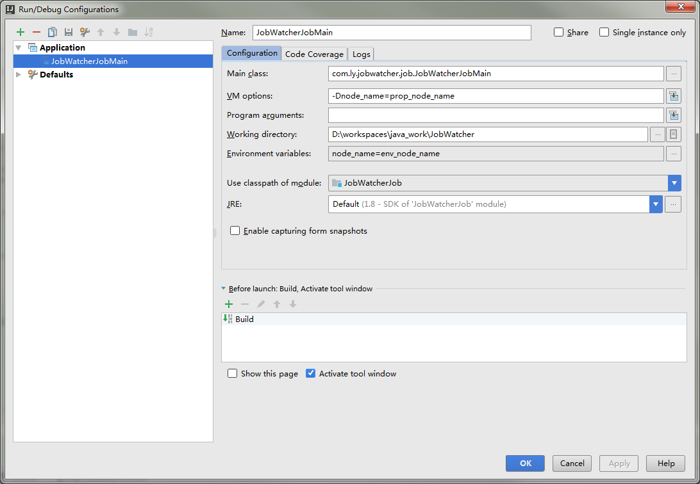

26 May 2017
这篇博客这要介绍下java system property 和env property的区别，以及如何在intellij idea中进行设置这两种类型的键值对
首先，property可以理解为键值对
我们开发java的时候，经常会遇到多种不同类型的property
有些是存放在内存里的property，有些是以配置文件的方式存在的，比如yaml，比如properties文件，再有就是两类比较特别的property（其实这些
在spring 中都被抽象成了property source，当然，这个是后话，具体的我会写另外的blog记录）
这里介绍的就是这两类特殊的property， java system property，和env property
前者经常通过命令行java command -Dproperty1=xxx指定
后者通过设置系统环境变量获取，常见于云环境和docker，比如在linux中export，比如在windows中通过系统属性配置
先看段 stackoverflow上的介绍
System properties are set on the Java command line using the -Dpropertyname=value syntax.
They can also be added at runtime using
System.setProperty(String key, String value)
//or
System.getProperties().load()
methods.
To get a specific system property you can use
System.getProperty(String key)// or
System.getProperty(String key, String def).
Environment variables are set in the OS, e.g. in Linux export HOME=/Users/myusername or on Windows SET WINDIR=C:\Windows etc, and, unlike properties,
may not be set at runtime.
To get a specific environment variable you can use
System.getenv(String name).
system property 是java特有的，可以运行时修改
env property 是系统层面的，只读
具体的api参见上面的代码
最后讲下，如何在idea里进行这两种属性，方便线下调试
废话不多说，上图就行
点击右上角的运行项目，如果没有运行过，先运行下
打开编辑界面

其中截图中的VM Options的就是设置java system property
而下面Enviroment Variables 就是临时设置系统环境变量。因为如果在系统属性里设置环境变量。需要重启idea。比较麻烦。用这个比较方便。